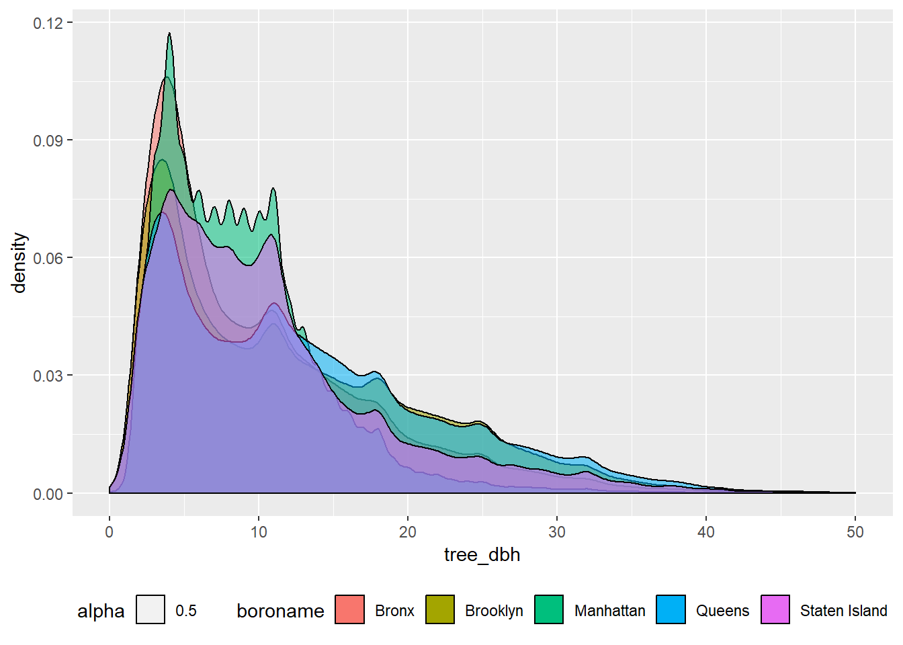
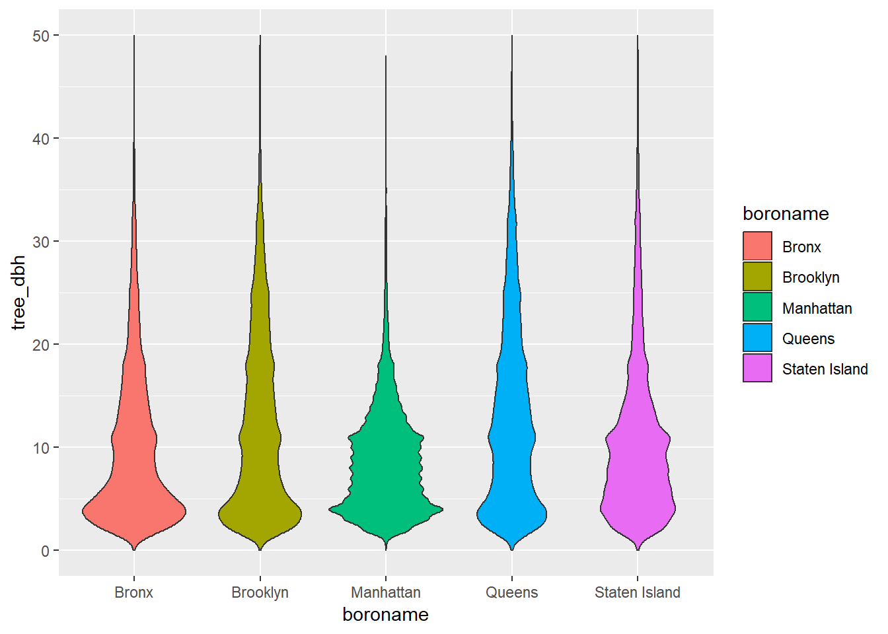
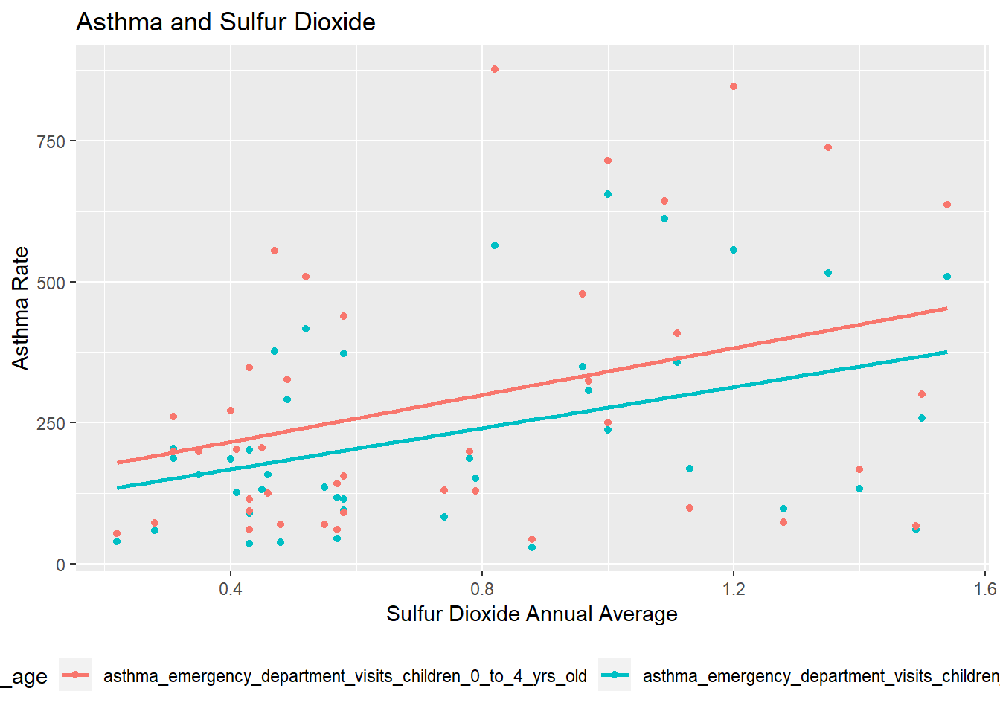
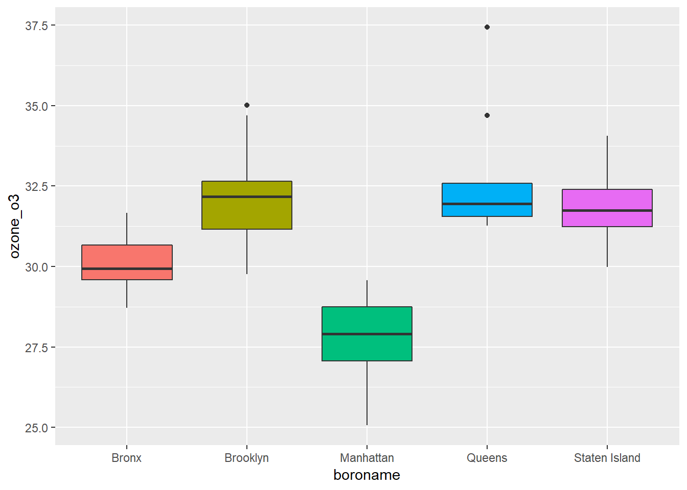
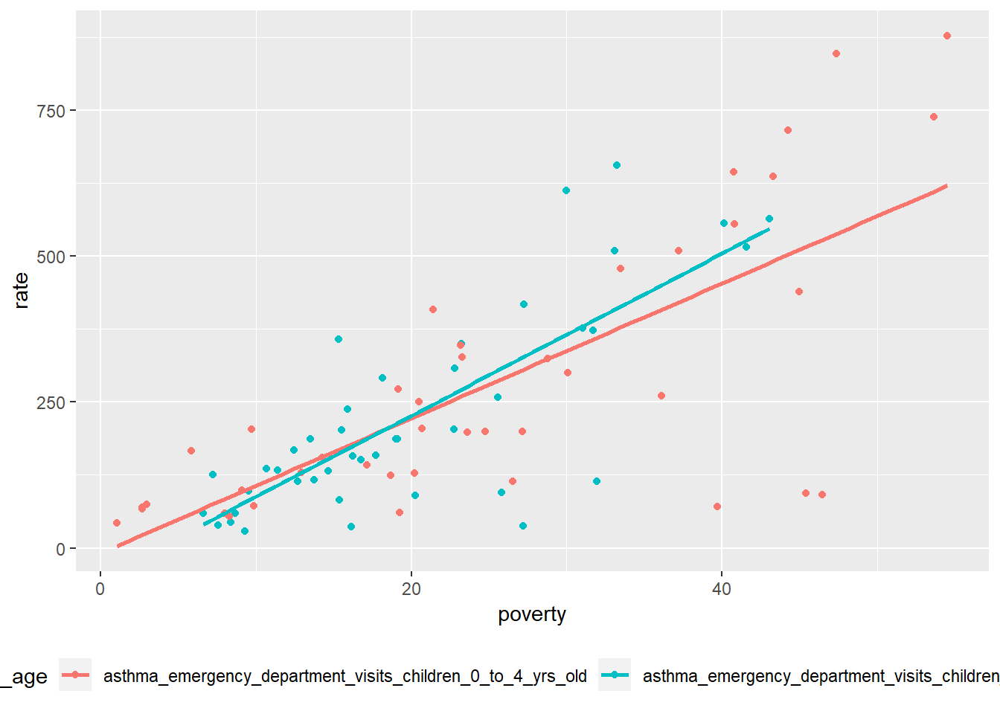
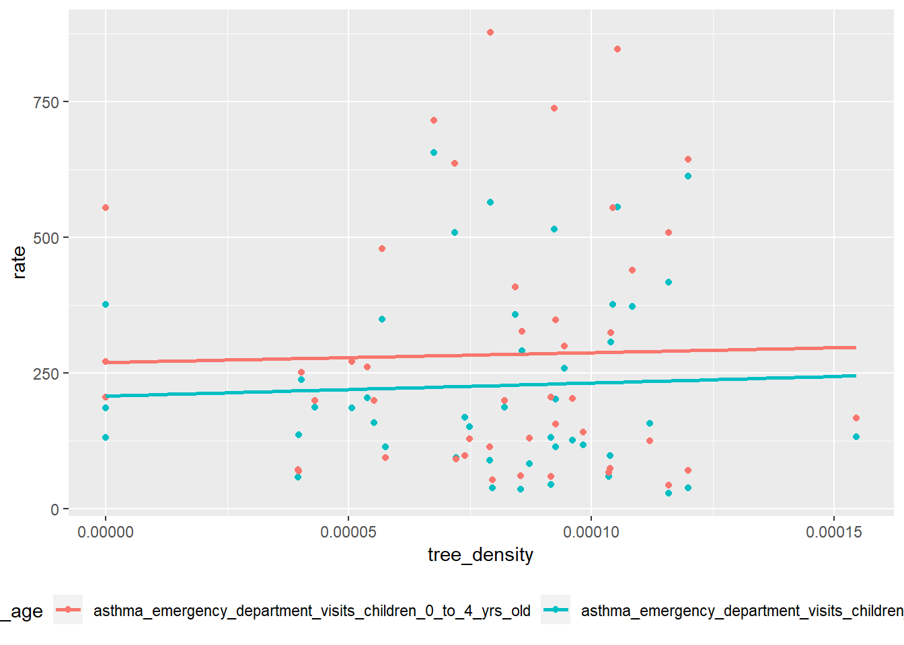
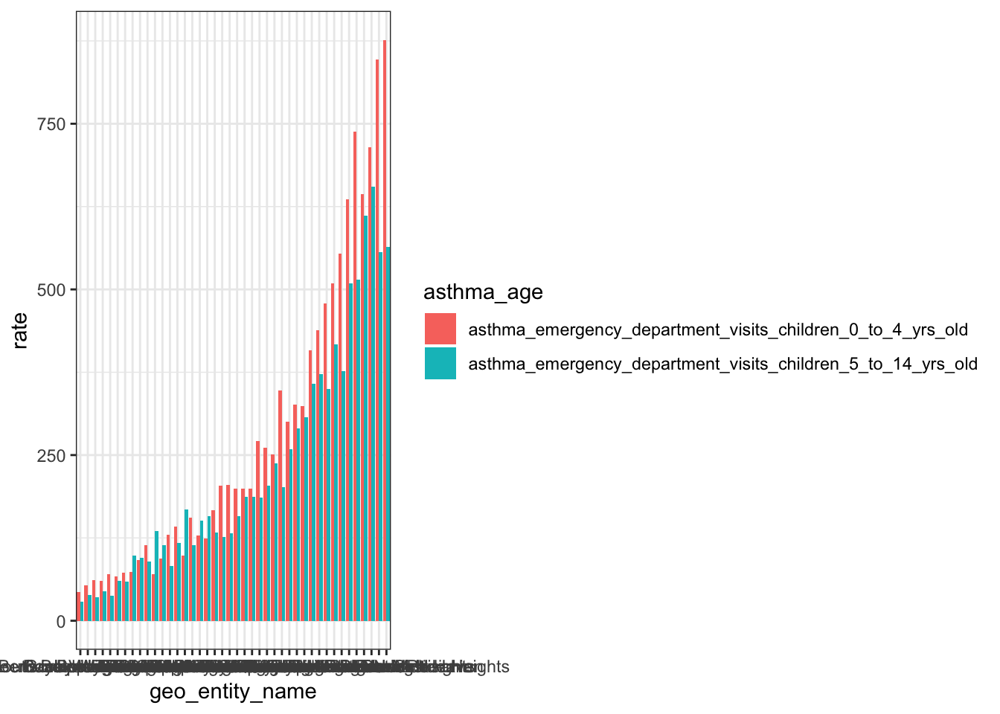
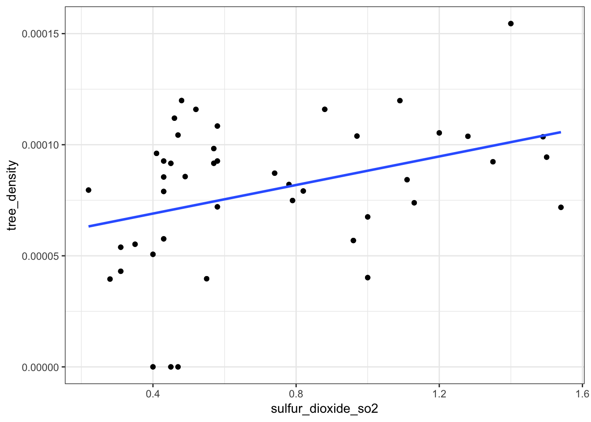
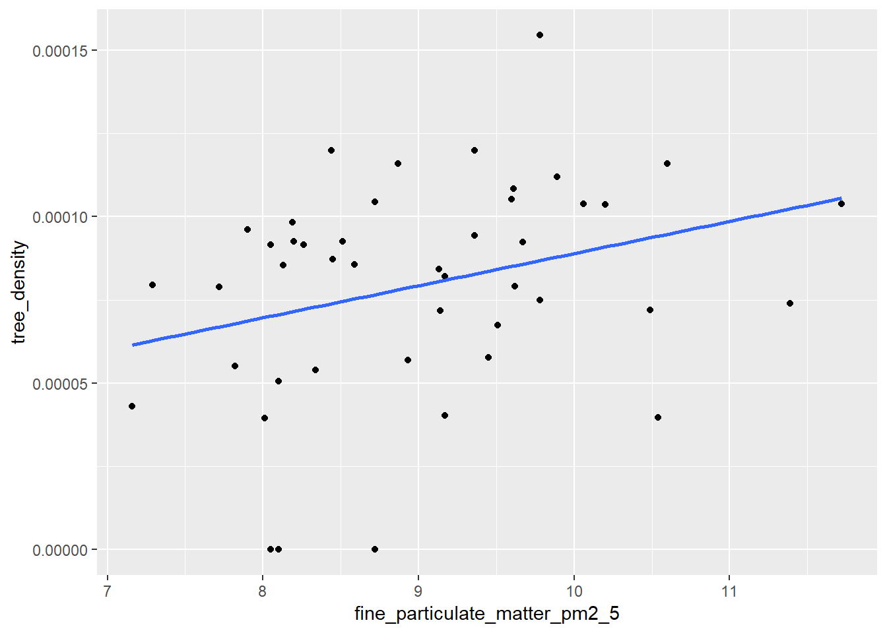
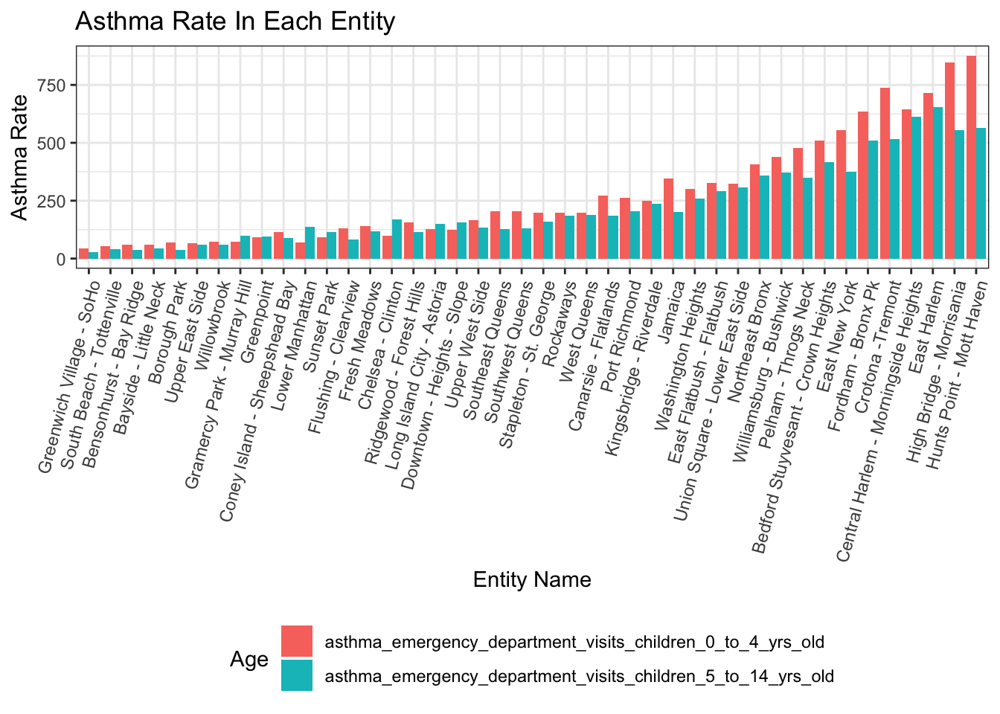

library(tidyverse)
library(dplyr)
library(readr)
library(ggplot2)
library(readxl)#import and tidy tree data
tree_df = read_csv("./data/2015StreetTreesCensus_TREES.csv") %>%
janitor::clean_names() %>%
filter(status == "Alive") ## Parsed with column specification:
## cols(
## zipcode = col_integer(),
## boroname = col_character(),
## tree_dbh = col_integer(),
## status = col_character(),
## health = col_character(),
## spc_common = col_character(),
## Latitude = col_double(),
## longitude = col_double()
## )zipcode_uhf42 = read_excel("./data/Zipcode_UHF42.xlsx") %>%
gather(key = zipcode_no, value = zipcode, zipcode1:zipcode9) %>%
select(-zipcode_no, uhf42_name) %>%
filter(is.na(zipcode) == FALSE)
tree_df = left_join(tree_df, zipcode_uhf42, by = "zipcode")
mydat = rgdal::readOGR("./UHF42/UHF_42_DOHMH.shp")## OGR data source with driver: ESRI Shapefile
## Source: "/Users/wuxinyao/Desktop/p8105_final_project/UHF42/UHF_42_DOHMH.shp", layer: "UHF_42_DOHMH"
## with 43 features
## It has 8 fieldsarea=data.frame(uhf42_code = mydat$UHFCODE,area = mydat$SHAPE_Area) %>%
filter(is.na(uhf42_code) == FALSE)
tree_df = left_join(tree_df, area, by = "uhf42_code")#among 652,173 trees, only 361 trees have diameter larger than 70, so we make plots without them.
#density plot of tree_dbh
ggplot(tree_df) +
geom_density(aes(x = tree_dbh, fill = boroname, alpha = 0.5))+
scale_x_continuous(limits = c(0, 50)) +
theme(legend.position = "bottom")## Warning: Removed 361 rows containing non-finite values (stat_density).
#violin plot of tree_dbh
ggplot(tree_df) +
geom_violin(aes(x = boroname, y = tree_dbh, fill = boroname))+
scale_y_continuous(limits = c(0, 50)) +
theme(legend.position = "bottom")## Warning: Removed 361 rows containing non-finite values (stat_ydensity).
#tree density
tree_density = tree_df %>%
group_by(boroname, uhf42_name, uhf42_code, area) %>%
dplyr::summarize(tree_total = n()) %>%
filter(is.na(uhf42_name) == FALSE) %>%
group_by(uhf42_name) %>%
dplyr::mutate(tree_density = tree_total/area) %>%
ungroup() %>%
mutate(uhf42_name = forcats::fct_reorder(uhf42_name, tree_density))#read and tidy data
asthma_air_poverty = read_csv("./data/asthma_pollutes_poverty.csv") %>%
select(geo_entity_id, geo_entity_name, name, data_value) %>%
filter(is.na(geo_entity_id) == FALSE) %>%
spread(key = name, value = data_value) %>%
janitor::clean_names() %>%
select(poverty, children_under_5_years_old_in_poverty, everything()) %>%
mutate(asthma_total = asthma_emergency_department_visits_children_0_to_4_yrs_old + asthma_emergency_department_visits_children_5_to_14_yrs_old,
geo_entity_name = forcats::fct_reorder(geo_entity_name, asthma_total))## Parsed with column specification:
## cols(
## `Unique Id` = col_character(),
## indicator_id = col_integer(),
## geo_type_id = col_integer(),
## measurement_type_id = col_integer(),
## internal_id = col_integer(),
## subtopic_id = col_integer(),
## name = col_character(),
## Measure = col_character(),
## geo_type_name = col_character(),
## description = col_character(),
## geo_entity_id = col_integer(),
## geo_entity_name = col_character(),
## year_description = col_character(),
## data_value = col_double(),
## message = col_character()
## )tree_density_total = tree_density %>%
select(boroname, geo_entity_id=uhf42_code, tree_density) %>%
distinct()
final_df = left_join(asthma_air_poverty, tree_density_total)## Joining, by = "geo_entity_id"#SLR:choose the pollutes associated with asthma
o3_p1 = summary(lm(asthma_emergency_department_visits_children_0_to_4_yrs_old~ozone_o3, data=final_df))$coefficients[2,4]
o3_p2 = summary(lm(asthma_emergency_department_visits_children_5_to_14_yrs_old~ozone_o3, data=final_df))$coefficients[2,4]
black_carbon_p1 = summary(lm(asthma_emergency_department_visits_children_0_to_4_yrs_old~black_carbon, data=final_df))$coefficients[2,4]
black_carbon_p2 = summary(lm(asthma_emergency_department_visits_children_5_to_14_yrs_old~black_carbon, data=final_df))$coefficients[2,4]
pm2_5_p1 = summary(lm(asthma_emergency_department_visits_children_0_to_4_yrs_old~fine_particulate_matter_pm2_5, data=final_df))$coefficients[2,4]
pm2_5_p2 = summary(lm(asthma_emergency_department_visits_children_5_to_14_yrs_old~fine_particulate_matter_pm2_5, data=final_df))$coefficients[2,4]
no_p1 = summary(lm(asthma_emergency_department_visits_children_0_to_4_yrs_old~nitric_oxide_no, data=final_df))$coefficients[2,4]
no_p2 = summary(lm(asthma_emergency_department_visits_children_5_to_14_yrs_old~nitric_oxide_no, data=final_df))$coefficients[2,4]
no2_p1 = summary(lm(asthma_emergency_department_visits_children_0_to_4_yrs_old~nitrogen_dioxide_no2, data=final_df))$coefficients[2,4]
no2_p2 = summary(lm(asthma_emergency_department_visits_children_5_to_14_yrs_old~nitrogen_dioxide_no2, data=final_df))$coefficients[2,4]
so2_p1 = summary(lm(asthma_emergency_department_visits_children_0_to_4_yrs_old~sulfur_dioxide_so2, data=final_df))$coefficients[2,4]
so2_p2 = summary(lm(asthma_emergency_department_visits_children_5_to_14_yrs_old~sulfur_dioxide_so2, data=final_df))$coefficients[2,4]
data.frame(Pollute = c("Ozone", "Black Carbon", "PM2.5", "NO", "NO2", "SO2"),
P_value1 = c(o3_p1, black_carbon_p1, pm2_5_p1, no_p1, no2_p1, so2_p1),
P_value2 = c(o3_p2, black_carbon_p2, pm2_5_p2, no_p2, no2_p2, so2_p2)) %>%
knitr::kable(digits = 3)| Pollute | P_value1 | P_value2 |
|---|---|---|
| Ozone | 0.893 | 0.376 |
| Black Carbon | 0.569 | 0.220 |
| PM2.5 | 0.678 | 0.265 |
| NO | 0.490 | 0.883 |
| NO2 | 0.758 | 0.328 |
| SO2 | 0.023 | 0.006 |
#based on p values, we choose SO2#MLR
summary(lm(asthma_emergency_department_visits_children_0_to_4_yrs_old~tree_density+sulfur_dioxide_so2+children_under_5_years_old_in_poverty,data=final_df)) %>%
broom::tidy() %>%
knitr::kable()| term | estimate | std.error | statistic | p.value |
|---|---|---|---|---|
| (Intercept) | -103.55417 | 7.107578e+01 | -1.4569545 | 0.1527456 |
| tree_density | -450005.47197 | 7.087065e+05 | -0.6349673 | 0.5289775 |
| sulfur_dioxide_so2 | 192.94852 | 6.144257e+01 | 3.1403066 | 0.0031272 |
| children_under_5_years_old_in_poverty | 11.17321 | 1.438942e+00 | 7.7648807 | 0.0000000 |
summary(lm(asthma_emergency_department_visits_children_5_to_14_yrs_old~tree_density+sulfur_dioxide_so2+poverty,data=final_df)) %>%
broom::tidy() %>%
knitr::kable()| term | estimate | std.error | statistic | p.value |
|---|---|---|---|---|
| (Intercept) | -82.55365 | 5.019181e+01 | -1.6447634 | 0.1076654 |
| tree_density | -471392.09498 | 4.963879e+05 | -0.9496446 | 0.3478574 |
| sulfur_dioxide_so2 | 122.64218 | 4.405184e+01 | 2.7840421 | 0.0080856 |
| poverty | 12.87822 | 1.587895e+00 | 8.1102445 | 0.0000000 |
final_asthma_df = gather(final_df, key = asthma_age, value = rate, asthma_emergency_department_visits_children_0_to_4_yrs_old:asthma_emergency_department_visits_children_5_to_14_yrs_old) %>%
gather(key = poverty_age, value = poverty, poverty:children_under_5_years_old_in_poverty) %>%
filter((asthma_age == "asthma_emergency_department_visits_children_5_to_14_yrs_old"&poverty_age == "poverty")|(asthma_age == "asthma_emergency_department_visits_children_0_to_4_yrs_old"& poverty_age == "children_under_5_years_old_in_poverty"))
#asthma and so2
ggplot(final_asthma_df) +
geom_point(aes(x = sulfur_dioxide_so2, y = rate, color = asthma_age))+
geom_smooth(aes(x = sulfur_dioxide_so2, y = rate, color = asthma_age), method = "lm", se = F) +
labs(
title = "Asthma and Sulfur Dioxide",
x = "Sulfur Dioxide Annual Average",
y = "Asthma Rate"
) +
theme(legend.position = "bottom") 
#asthma and pm2.5
ggplot(final_asthma_df) +
geom_point(aes(x = fine_particulate_matter_pm2_5, y = rate, color = asthma_age))+
geom_smooth(aes(x = fine_particulate_matter_pm2_5, y = rate, color = asthma_age), method = "lm", se = F) +
theme(legend.position = "bottom")
#asthma and poverty
ggplot(final_asthma_df) +
geom_point(aes(x = poverty, y = rate, color = asthma_age))+
geom_smooth(aes(x = poverty, y = rate, color = asthma_age), method = "lm", se = F) +
theme(legend.position = "bottom")
#asthma and tree
ggplot(final_asthma_df) +
geom_point(aes(x = tree_density, y = rate, color = asthma_age)) +
geom_smooth(aes(x = tree_density, y = rate, color = asthma_age), method = "lm",se = F) +
theme(legend.position = "bottom")
#asthma 0-4 and asthma 5-14 in each UHF42
ggplot(final_asthma_df) +
geom_bar(aes(x = geo_entity_name, y = rate, fill = asthma_age), stat = "identity", position = "dodge")
theme(legend.position = "bottom")## List of 1
## $ legend.position: chr "bottom"
## - attr(*, "class")= chr [1:2] "theme" "gg"
## - attr(*, "complete")= logi FALSE
## - attr(*, "validate")= logi TRUE#tree and SO2
ggplot(final_asthma_df) +
geom_point(aes(x = sulfur_dioxide_so2, y = tree_density)) +
geom_smooth(aes(x = sulfur_dioxide_so2, y = tree_density), method = "lm", se = F)
#tree and pm2.5
ggplot(final_asthma_df) +
geom_point(aes(x = fine_particulate_matter_pm2_5, y = tree_density)) +
geom_smooth(aes(x = fine_particulate_matter_pm2_5, y = tree_density), method = "lm", se = F) +
labs(
title = "Tree Density and PM2.5",
x = "PM2.5 Average",
y = "Tree Density"
) 
#asthma 0-4 and asthma 5-14 in each UHF42
ggplot(final_asthma_df) +
geom_bar(aes(x = geo_entity_name, y = rate, fill = asthma_age), stat = "identity", position = "dodge") +
labs(
title = "Asthma Rate In Each Entity",
x = "Entity Name",
y = "Asthma Rate"
) +
theme(legend.position = "bottom", axis.text.x = element_text(angle = 75, hjust = 1)) +
guides(fill = guide_legend(nrow = 2)) +
scale_fill_hue(name = "Age") 
#Paired T test to test if there is significant difference between asthma rate of 0-4 and that of 5-14
t.test(final_df$asthma_emergency_department_visits_children_0_to_4_yrs_old, final_df$asthma_emergency_department_visits_children_5_to_14_yrs_old, paired=T) %>%
broom::tidy() %>%
knitr::kable()| estimate | statistic | p.value | parameter | conf.low | conf.high | method | alternative |
|---|---|---|---|---|---|---|---|
| 57.01778 | 4.761863 | 2.11e-05 | 44 | 32.88609 | 81.14946 | Paired t-test | two.sided |